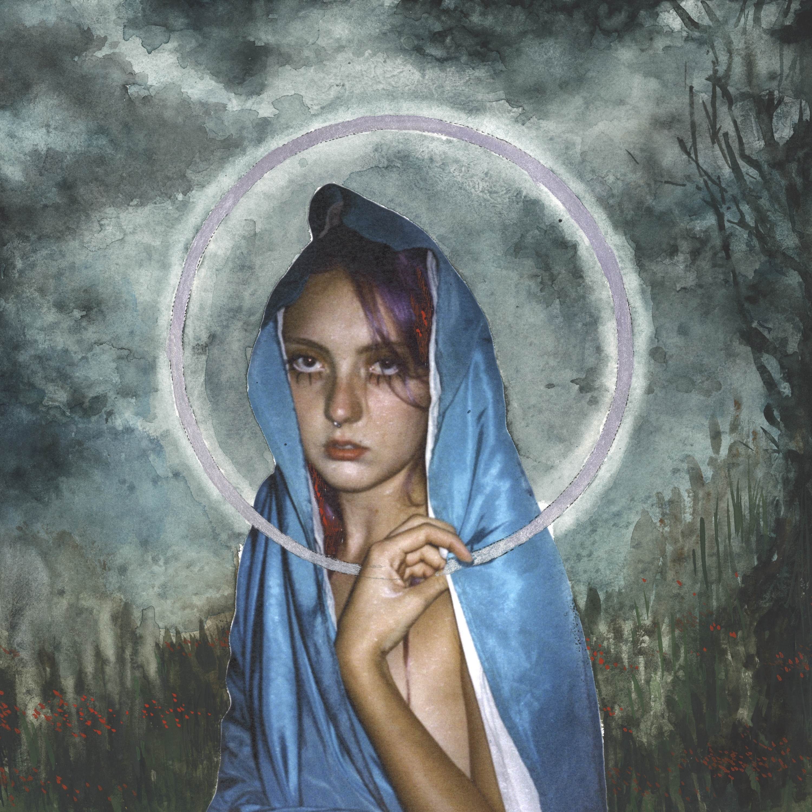

Pitchfork Paris Festival
follow pink iPod on Instagram @pink.i.pod
Petra recently released her single “I Am God”, a dive into a dizzying loneliness. I can attest to her godliness. She got electrocuted a few days ago and liked it. She has purple hair and she writes songs while watching movies on mute. Need I say more? It’s mythological. Welcome to my interview with God.
Petra loves birds, pigeons in particular. She loves the 70s, movies, and movies from the 70s, as well as vintage clothes, just like the vintage pink robe she was wearing on stage. Her voice has a captivating airiness to it, as if she was trying to call the birds to her, and when they arrive, she completely deploys it. Exploring isolation in exile, Petra told me today about her inexorable flight away from her first home, Slovakia, and how her thirst for freedom had also been a longing for a new one. She did not find it in Amsterdam, nor in London. Perhaps she finds bits of it in her music and on stage, when we see her depart and come back to us. On my way to interview Petra, I noticed every pigeon and every bird in the sky. While that may have been the poetic effect of the cold breeze, I believe Petra is one of those artists who slightly shifts your point of view, so that her unavoidable obsessions become unavoidable to you.
Pink iPod: Let’s start with the important thing: I saw that you got electrocuted recently and you got newfound energy from it. Can you tell me about that experience?
PETRA: (she laughs softly) I was with my friend in Poland for his birthday and he has a new flat and it’s kind of like a mess still. I went to the bathroom and I didn’t have my glasses on and it was dark. And in London, like, they have these switches that are like this (she moves her finger clicking up and down). And I couldn’t find a switch. So I was just touching something and I was pulling it up and down and really hard. And all of a sudden I get shocked and the whole flat goes black. And everybody is like, what the fuck is going on? And I was just like, guys... And I felt so reset, you know, like I was in a weird state of mind before and then it felt like it woke me. It was good.
Pink iPod: I wanted to talk a little bit about the clothes you had on stage yesterday. Can you tell me a little bit more about the robe you were wearing, and why you chose to dress like this?
PETRA: I found this robe in a thrift store in London. It was like 15 pounds or something but it’s vintage and I really just love older stuff, you know. I love that when things have soul. And it kind of connects with the whole universe of me processing my thoughts and mental health and sometimes it’s all located in the bedroom and in these clothes where you need to feel cozy and, you know, like you’re rotting in your bed sort of vibe. So I felt like a robe is kind of appropriate for the show and it was kind of uplifting and I love the velvety thing going on with the purple.
Pink iPod: I think you also had a music note on your forehead?
PETRA: I found it as a necklace with a music note on it, and I just put it on my head and I was like, I really like this because it’s also like, I don’t know, the third eye. I just love the 70s and it kind of reminded me of that. So I was like, I’m going to put music on my third eye. It’s going to be good.
Pink iPod: I wanted to talk about your latest single “I Am God”. I first need to know if it had a connection with “I Am a God” by Kanye, because I saw you posted the song, or was it just a sort of nod?
PETRA: Well, first of all, fuck Kanye. He’s a horrible person, but we cannot deny his music. I was back in Slovakia, I was listening to “I Am a God” by him, and I was really listening to it like 10 times a day because I had to get myself somewhere better mentally. So it definitely does have some sort of connection. But my song “I Am God” is coming from a previous time where I was really processing this state of mind of me trying to escape my own head. But yeah, there’s a sort of connection of, I just like this slight narcissism that he has, but you know, he pushes it to the extreme where it’s just not okay anymore.
Pink iPod: Because with “I Am God” it felt like you shifted that and you made it into a sort of pathetic, but in the sense of pathos and emotions. It feels like you’re trying to convince yourself in the song.
PETRA: Yeah, exactly.
Pink iPod: I want to talk about “Zeppelin”. Escaping and flying away are big themes in a lot of your songs. But in “Zeppelin” specifically, you can feel, and tell me if I’m wrong there, a sort of tension between flying away and escaping, but also coming back home. And because freedom is such a big part of your work, does freedom mean coming back home or does it mean going away?
PETRA: I think it’s somewhere in between, because for me right now it’s kind of finding my home. It feels like I’ve been away from where I was raised for so long that too many things changed, and I changed so much, and the people there changed. It just doesn’t feel like home anymore, even though my family is quite in a bubble, so they live in a way where not a lot of things are changing. But just like me, I always wanted to leave because I felt like my wings may be bigger than the environment I was raised in. But right now it’s like wherever I go I just don’t feel at home. And I always feel like leaving when things get somehow harder and I think the next place is going to be better. But you take yourself with you, you know. So maybe one day I’m going to come to a place where everything aligns and I have both things at once, the freedom and also the home feeling.
Pink iPod: Do you feel like you’ve found a home? Because I think you were in Amsterdam before, right? Do you feel like you’ve found a home in London finally?
PETRA: No, I don’t think so.
Pink iPod: Who’s the child voice in “Zeppelin”?
PETRA: Oh, that’s my niece. That’s my sister’s daughter. She’s saying this child poem about her mom. It’s really cute. It’s like “When I was in your belly, did we speak to each other? What was happening there? You only know that you’re my shining star mom”.
It’s really, really sweet. And my sister just sent me the video and I was like, oh my god, this is too cute, I have to use it. “Zeppelin” feels like such a vulnerable song and this childish purity, I guess, was so fitting with the soundscape as well, so I was just like, I need to use it.
Pink iPod: What’s your biggest non-musical inspiration at the moment?
PETRA: I love Egon Schiele, the painter. I love how he portrays the silhouettes of people. I absolutely love his twisted bodies. And I love movies. I was watching Buffalo’ 66 and movies like Possession, and maybe older, 90s, 70s, Daisies, Czechoslovak New Wave, for example, I love that. Movies are a big part.
Pink iPod: I think I saw that you write songs while movies are on mute. Can you tell me which movie you were watching while you were writing these songs?
PETRA: Well, when I wrote “Zeppelin”, I was not watching a movie. But I was watching Possession and then I was watching Lilya 4 Ever. I saw it like eight times, but never with the sound on. So I don’t know what’s going on, actually. I’m just making it my own. I find it’s really endearing. It’s a good inspiration. I was also watching The Devils, or what is it called? I think they’re restoring it right now. It was banned at some point. But it’s beautiful visually.
Pink iPod: I wanted to know a bit more about Adam because I think he’s one of your close collaborators. How did that relationship emerge, and how does he help you in your music, in your projects?
PETRA: We’ve been together since high school, which has been almost nine years, which is crazy. I was in an environment which was not really supportive of what I wanted to do. He was always like, you have this clear vision of what you want, let’s just do it and I’m going to help you. And he’s been honestly helping me with everything. Back in Amsterdam he found me these studios and these people to work with. Currently, he’s taking a lot of videos and photos with me. He’s really good at that. And sometimes we make music together. He’s really talented with sounds as well. But in Amsterdam, when we didn’t have any money, he was working two shifts, day and night, on Uber Eats delivery so I could just stay at home and write songs.
Pink iPod: Can you tell me a bit more about the next project you’re preparing? Is it an album? Is it an EP?
PETRA: I think it’s going to be a double EP. Next I’m going to release this song that I’m really excited about. It’s called “17.50”. And then I’m going to dive more into the world of isolation and all the angles on it. I’m really excited about that. A lot of the demos that I played yesterday are going to be a part of it. And it’s going to have this vintage 70s flair a little bit, but with a more modern approach.
Pink iPod: Have you ever thought about writing songs in Slovak?
PETRA: I think maybe somewhere in the future. Not in the near future. At some point, a sentence here, a sentence there. I think that would be cool. But right now I’m kind of English focused and it was always easier for me to write in English for whatever reason.
Pink iPod: Did you start with writing poetry and then it got into songs?
PETRA: I was always writing stories, short stories. Little poems, but mostly short stories. That’s how it started. I loved doing that. I really want to write a book in the future.
Pink iPod: My next question is a broader question on your work. Your topics are very vulnerable and very introspective. But the aesthetics that you use draw a lot from surrealism and the absurd. I was wondering whether that surrealism is a continuation of that vulnerability, or perhaps more of a shield, a way to separate yourself?
PETRA: It’s more for me about the escapism in it. What I love about art and being an artist is that you can create a world of your own and you can design it and decorate it in ways that you want. For me it’s another layer of reality. So having these surreal undertones to it is something that needs to happen for my thing to come through. For me it’s escapism. It’s my world, you know.
Pink iPod: If you had all the money in the world, all the time in the world, what kind of projects, musical or non musical, would you make, you think?
PETRA: Wow. Okay. Besides music projects, I think I would really go into helping people with a home. When I have the bag I really want to get into that. Every time you leave the house, especially in London, in big cities, you can always feel and see it. People are struggling everywhere these days. They always were, but somehow it feels like the world is progressing to a point where the gap between the rich and the middle class or the poorer people is just getting bigger, and I think we need to do something about it.
Pink iPod: (Smiling and thinking to myself I’d never thought about the question like that before. I smiled). Do you have an ideal feature you would love to do?
PETRA: I think Ethel Cain. I love her. She’s great. I love Lana, of course, as well. She’s our mother.
Pink iPod: What did you think of her last singles?
PETRA: I didn’t really listen to the country one because I’m not super drawn to country that much. I love “White Feather Hawk Tail Deer Hunter”. I love that so much. She’s amazing. But Ethel, she just has something so true, it feels like. I would love that.
Pink iPod: Well, my last question would be then, what song would you play at your funeral?
PETRA: Wow, that is such a... I think “River Man” from Nick Drake.
Pink iPod: Do you want people to cry at your funeral?
PETRA: Yes! Oh my god, yes please, everybody!
Pink iPod: And do you want everyone to be dressed in purple?
PETRA: Oh yes! How lovely would that be. And there needs to be a party after that, everybody needs to dance, but really dance, you know, not just like this, but go and feel free for a second.
Pink iPod: Thank you so much, Petra.

Zeppelin / I Am God / Line of Best Fit